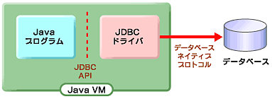

吉村 武志 (@takesi_yosimura)
吉村 武志
福岡周辺の勉強会に時々出没して
、
togetterまとめたりしてる人
Javaの勉強会やってますが、 仕事はClassic ASP & VB.Net
趣味は音ゲーとかアナログゲーム（ボードゲーム・TRPG）
最近はデレステとかハマってます
「リレーショナル・データベース
（および、ほとんどすべての表形式のデータ）に
アクセスするための、標準Java API」

データベース間の差異を吸収するJDBCドライバと、
特定のベンダに依存しない標準APIであるJDBC API
これならDBが何かを気にせず書ける！
単純小規模なら別として、
大抵はDB固有機能に振り回されるかと…
まあそれはともかく、
まずはコードを書いてみましょう。
public void exec() throws ClassNotFoundException, SQLException {
String nengappi = "2016/08/11";
//ドライバのロード(要：postgresql-?.?.????.jar・・・
//参考：https://jdbc.postgresql.org/download.html)
Class.forName("org.postgresql.Driver");
//データベース接続
final String url = "jdbc:postgresql://localhost/yosimuradb";
final String user = "yosimura";
final String password = "tksypass";
try (Connection conn = DriverManager.getConnection(url, user, password)) {
//プリペアードステートメント
String sql = "SELECT 名称 FROM M_祝祭日 WHERE 年月日 = ?";
try (PreparedStatement stmt = conn.prepareStatement(sql)) {
stmt.setString(1, nengappi);
//クエリの発行
try (ResultSet rs = stmt.executeQuery()) {
if (rs.next()) {
String name = rs.getString(1);
System.out.printf("%sは祝祭日の%sです%n", nengappi, name);
} else {
System.out.printf("%sは祝祭日ではないっぽい%n", nengappi);
}
}
}
}
}
public void exec() throws ClassNotFoundException, SQLException {
String nengappi = "2016/08/11";
//ドライバのロード(要：sqljdbc4.jar…参考：https://msdn.microsoft.com/ja-jp/library/ms378526(v=sql.110).aspx)
Class.forName("com.microsoft.sqlserver.jdbc.SQLServerDriver");
//データベース接続
final String url = "jdbc:sqlserver://serverName;databaseName=dbName";
final String user = "user";
final String password = "pass";
try (Connection conn = DriverManager.getConnection(url, user, password)) {
//プリペアードステートメント
String sql = "SELECT 名称 FROM M_祝祭日 WHERE 年月日 = ?";
try (PreparedStatement stmt = conn.prepareStatement(sql)) {
stmt.setString(1, nengappi);
//クエリの発行
try (ResultSet rs = stmt.executeQuery()) {
if (rs.next()) {
String name = rs.getString(1);
System.out.printf("%sは祝祭日の%sです%n", nengappi, name);
} else {
System.out.printf("%sは祝祭日ではないっぽい%n", nengappi);
}
}
}
}
}
//ドライバのロード(要：postgresql-?.?.????.jar・・・
//参考：https://jdbc.postgresql.org/download.html)
Class.forName("org.postgresql.Driver");
PostgreSQL用のJDBCドライバのクラス名を指定して、
Class.forNameでClassをロードします。
（※Classが返されるが捨てている）
org.postgresql.Driverクラスではロードされたとき、
staticイニシャライザが呼び出されます。
staticイニシャライザではDriver自分自身が生成され、
DriverManager.registerDriverでマネージャに登録します。
final String url = "jdbc:postgresql://localhost/yosimuradb";
final String user = "yosimura";
final String password = "tksypass";
try (Connection conn = DriverManager.getConnection(url, user, password)) {
//・・・
}
接続用のURL、ユーザ、パスワードを指定し、
DriverManager.getConnectionにてConnectionを取得します。
Connectionオブジェクトは使用終了時にcloseしなければなりませんが、
上記の例のようにJava7のtry-with-resourceを使うと楽ですね。
// Java6以前
Connection conn = null;
try {
conn = DriverManager.getConnection(url, user, password));
//・・・
} finally {
if (conn != null) {
try {
conn.close();
} catch (SQLException ignore) {
}
}
}
//プリペアードステートメント
String sql = "SELECT 名称 FROM M_祝祭日 WHERE 年月日 = ?";
try (PreparedStatement stmt = conn.prepareStatement(sql)) {
stmt.setString(1, nengappi);
//・・・
}
Connection.prepareStatementにSQL文字列を渡して、
PreparedStatementを取得します。
PreparedStatementにはsetXxxxxメソッドがあり、
パラメータ「?」に渡すオブジェクトを指定できます。
文字列結合でSQLに可変パラメータを渡してしまうと、
SQLインジェクション脆弱性の元になるので避けましょう・・・
余談：名前付きパラメータはJDBC標準ではサポートされていません。
DBベンダが独自サポートしている場合があります。
//クエリの発行
try (ResultSet rs = stmt.executeQuery()) {
if (rs.next()) {
String name = rs.getString(1);
System.out.printf("%sは祝祭日の%sです%n", nengappi, name);
} else {
System.out.printf("%sは祝祭日ではないっぽい%n", nengappi);
}
}
参照系SQLは、PreparedStatement.executeQueryで発行できます。
更新系SQLの場合、PreparedStatement.executeUpdateです。
executeQueryで取得した結果セットResultSetオブジェクトから、
SELECTによる結果を参照できます。
毎回ドライバロードするのってイケてない
というかサーバの場合は、つなぎっぱなしにしたい。
JNDI = Java Naming and Directory Interfaceを使います。
さっくり言うと、コネクションプールに接続がプールされてるので、
そこからConnectionとってくる・・・ダケ。
Context context = new InitialContext();
DataSource ds = (DataSource)context.lookup("java:comp/env/jdbc/library");
Connection con = ds.getConnection();
こんな感じ。
後の使い方は一緒です。
多分、サーバに合わせた設定をしておけば使える！
すこし歴史について
1996年2月に発表
JDK1.2に含まれる(1996年12月)
1998年にはJDBC2.0
JDK1.4でJDBC3.0
JDK1.6でJDBC4.0
今回私が調べた情報は古いものもあるので、
見落としがあるかもしませんがご勘弁を。
あと、JDBCと言えばドライバが色々あるのが気になったので調べました。
タイプ２ドライバとかタイプ４ドライバとか言ってるアレです。
JDBC-ODBC ブリッジ JDBCからのクエリー要求を、 ODBCを経由して受け渡し、データベースとアクセスするもの。
ODBCドライバが必須であり、ハードウェアとOSに依存する。
Java SE7 までに標準で添付されているドライバでもある。
Java7では非推奨となり、Java8では標準から削除された。
ネイティブ API ドライバ JDBCからのクエリー要求を、 オペーレーティングシステム上のDLLや専用ライブラリに受け渡し、 そこからデータベースにアクセスするもの。
Type1に比べて階層が薄く済むため高速化が期待できる点とTCP/IPに依存しない利点があるが、 やはりハードウェアとオペレーティングシステムに依存する。
オラクルでいうとOCIドライバがこれに該当する。
通信プロトコルドライバ JDBCからのクエリー要求を Java で記述されたドライバ内で独自のプロトコルに変換し、 それをアプリケーションサーバを通じてデータベースにアクセスするもの。
機種依存・データベース依存をせずに軽量なドライバが作成可能だが、 中間サーバを挟むためにパフォーマンスに問題が起きる。
ネイティブプロトコルドライバJDBCからのクエリー要求をすべて Java 上で処理してしまうもの。
Java 上にデータベースにアクセスするためのすべての機能を乗せる為、 ドライバのサイズが大きくなる、パフォーマンスが若干低下する。
基本的にTCP/IPでしか利用できないなどの欠点があるが ハードウェアとオペレーティングシステムに依存しないため移植性に優れている。
オラクルでいうと thin ドライバがこれ該当する。
タイプ1、タイプ2はDBMSのDLLファイルやライブラリファイルを呼び出す形となるため、 JVMのメモリー管理外となる。
タイプ3、タイプ4についてはJVM上で Java のクラスとして実装されているため JVM上のガベージコレクションの対象となり管理が行いやすく、流れとしてはTYPE4が主流となっている。
ま、タイプ２ or タイプ４なのかなと思いました。
中間サーバ挟むタイプ3は面倒そうですし。
もうちょっと調べるつもりでしたが、力尽きました・・・